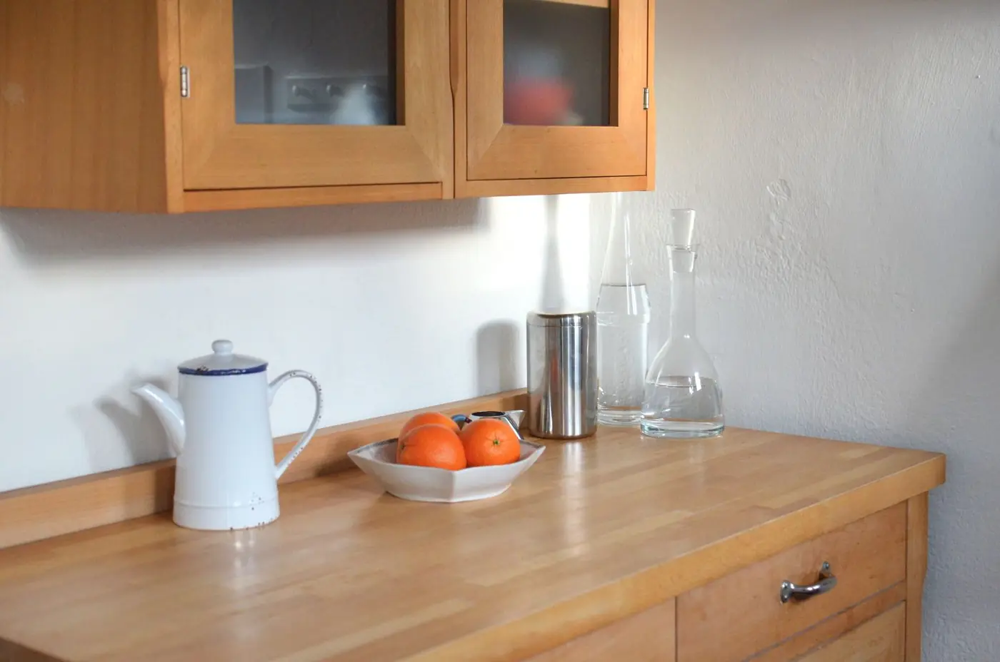
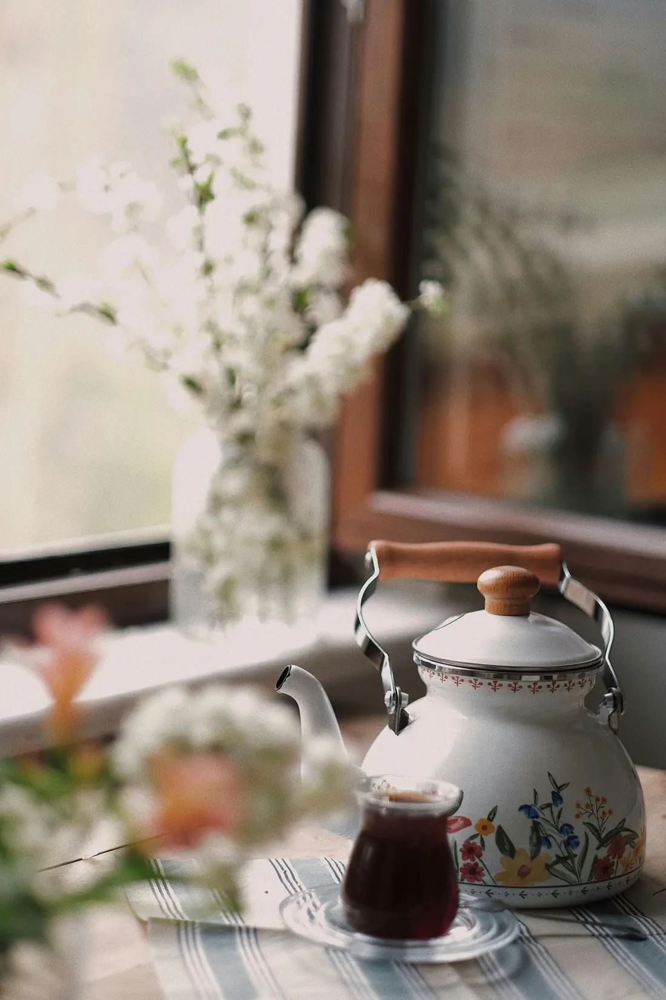

できること
-

掃除機がけ
畳、フローリング、じゅうたん。家具のすき間や部屋の隅まで掛け、気になる所は拭き掃除もします。
-

台所と水まわり
流し、コンロのまわり、洗面台。洗い物と、使い終えた器の片づけもお受けします。
-

お部屋の片づけ
出したままの物を元の場所へ戻し、よく使う物を手の届く所にまとめます。捨てる物は、必ずお尋ねしてから決めます。
エアコンの分解洗浄や高い所の作業など、お受けできない作業は本制作時にお店と決めて記載します。
料金
| 利用時間 | 料金 |
|---|
ご利用の流れ
-
空き状況を見て予約する
利用時間、担当、日にちと時刻を選び、カードでお支払いいただくと予約が決まります。ご家族の方が代わりに予約することもできます。
-
当日、担当がお伺いする
お伺いの前に、お電話することがあります。どこから始めるかを、玄関で一緒に決めてから作業します。
-
作業の後にご報告する
終えた場所と、気づいたことをお伝えします。離れて暮らすご家族の方にも、同じ内容をお届けできます。
担当スタッフ
写真は素材です（本番はご本人）。
ご家族の方に知っていただきたいこと
- 代わりに予約できます
- 予約の画面で「ご家族の方が代わりに予約」を選ぶと、お伺いする先の方と、連絡を受ける方を分けて入力できます。当日の連絡と作業後の報告は、ご家族の方に届きます。
- 同じ担当が続けて伺います
- 2回目からも、前回と同じ担当を選んで予約できます。家の中のことを、毎回はじめから説明しなくて済みます。
- 作業の後にご報告します
- 終えた場所と、気づいたことをお伝えします。報告の方法は、電話かメッセージのどちらかから選べるようにする予定です。
- 取り消しの決まり
- 取り消しの期限と料金を、ここに掲載します。掲載予定（本制作時に確認）
- 身分証と保険
- スタッフが持参する身分証と、加入している保険の内容を、ここに掲載します。掲載予定（本制作時に確認）
空いている日と時刻は、予約の画面で2週間先まで見られます。
空き状況を見て予約する